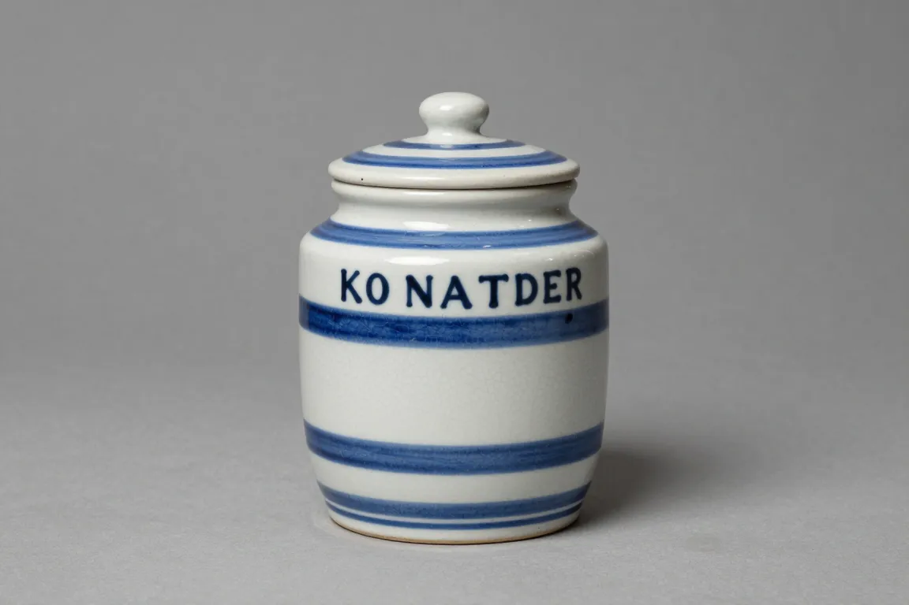

ceramics · 1924–1985 · also: Cornish Ware, Blue and white banded kitchenware, Kitchen storage jars
White earthenware kitchen ware with four blue hand-banded stripes. It started as a set of storage jars and grew to jugs, mugs and egg cups, in a pattern that a lathe repeats by hand.

Core thesis
A kitchen set looks right when every piece carries the same four blue stripes on white, so the shelf reads as one plain family.
Design principles
Make every piece in white earthenware with a wall 3 to 5 mm thick and a plain, round shape.
Band the piece on a banding wheel with four blue stripes: two thick and two thin.
Use one blue, a deep cobalt, in the stripes, and keep the rest white.
Mark the side of a canister with its name in black lettering.
Put a plain lid with a knob on each jar; make the size steps 1, 2 and 3.
Glaze the piece in a clear, bright, white-looking glaze and fire it at about 1060 °C.
Add a pale blue or a cream in later pieces only after 1960.